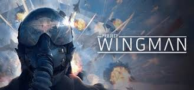

Início

Projeto Wingman é um jogo de de ação de voo desenvolvido apenas por três pessoas, sendo classificado como indie.
Inspiração
O Projeto Wingman foi inspirado em jogos de voo como o IL-2 Sturmovik e o Ace Combat.
Os desenvolvedores do projeto buscaram trazer a sensação de voo de ação e a emoção das batalhas aéreas para os jogadores.
Até mesmo na comunidade de Ace Combat, Projeto Wingman é considerado como um sucessor espiritual para a franquia e uma parte do clube.
Desenvolvimento
O desenvolvimento do Projeto Wingman foi, surpreendentemente, um processo colaborativo entre os três desenvolvedores, que compartilharam conhecimentos e experiências para criar um jogo único e envolvente.
Mas mesmo com apenas três desenvolvedores, o jogo traz uma experiência de qualidade que impressiona os jogadores.
O jogo foi desenvolvido com muito esforço e dedicação, resultando em uma experiência de voo arcade e envolvente.
Até mesmo melhorou algumas coisas de Ace Combat como poder escolher múltiplas armas especiais e ter mais movimento com o AOA Limiter (Limitador de AOA).
- Abi "RB-D2" Rahmani: Desenvolvedor principal, artista e produtor.
- Matthew "FlyAwayNow" Nguyen: Escritor e produtor.
- Jose Pavli: Compositor da música.